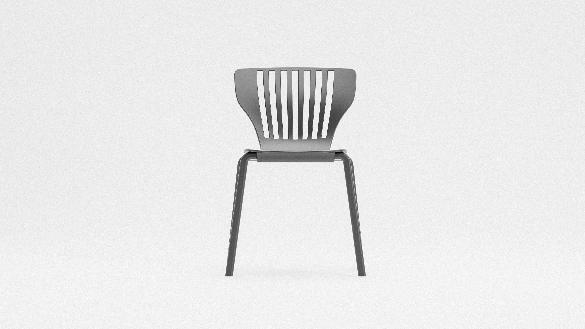
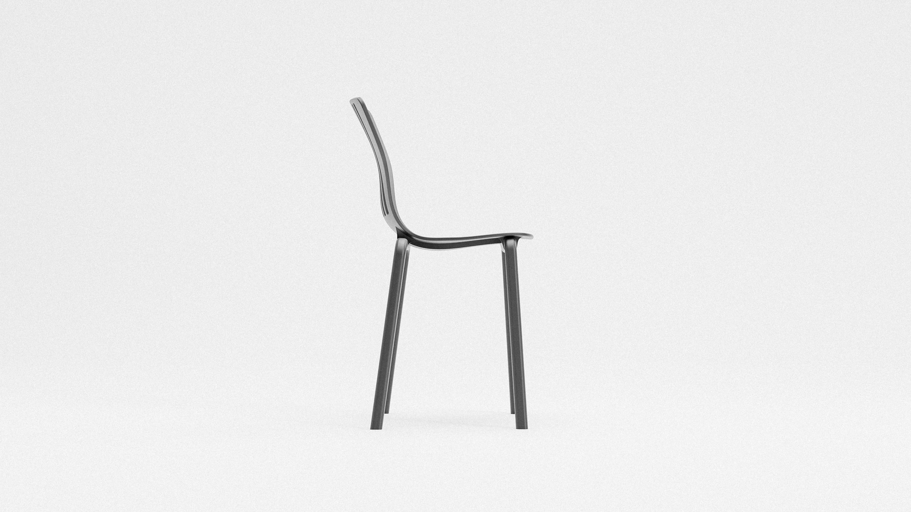
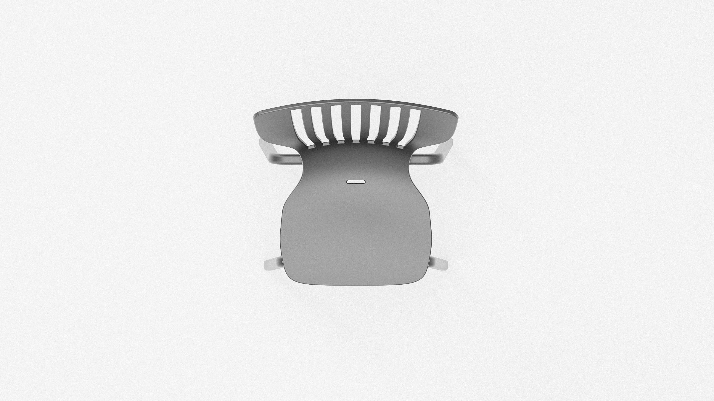
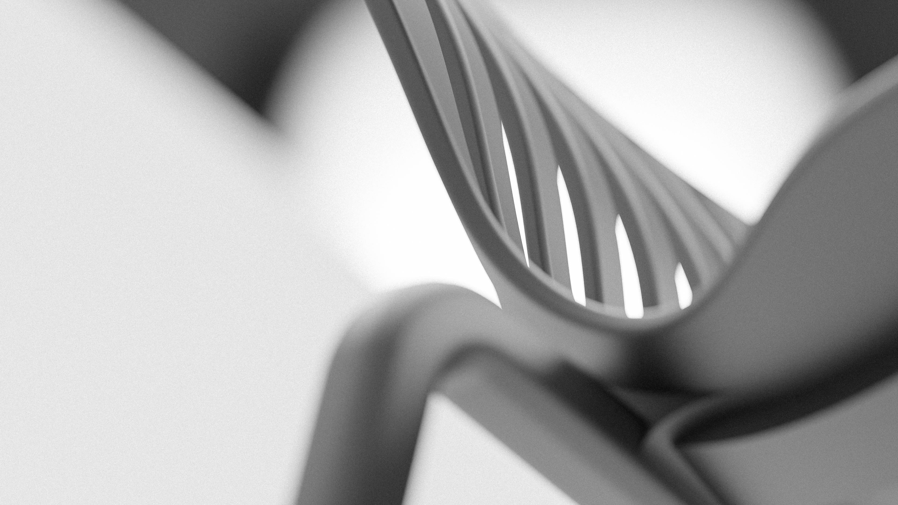
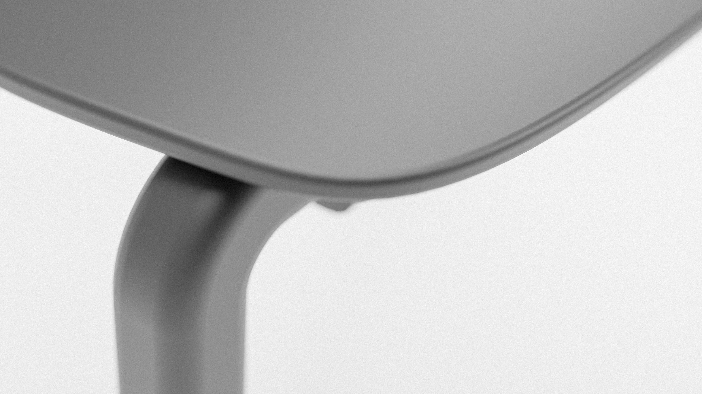

HARP CHAIR
Harp Chair esplora l'eleganza strutturale e la tensione formale ispirata alla geometria di un'arpa da concerto. Il telaio in profilato d'alluminio sagomato a freddo lavora in sinergia con cavi metallici in tensione calibrata, offrendo una seduta che unisce una silhouette aerea a un rigoroso studio ergonomico e materico.
TIPOLOGIA
Lounge Chair / Scultura d'Arredo
MATERIALI
Alluminio 6061-T6, Acciaio armonico, Cuoio naturale
LAVORAZIONE
Fresatura CNC a 5 assi, Calandratura & Assemblaggio manuale
FINITURA
Anodizzazione satinata micropallinata
DIMENSIONI
820 × 680 × 740 mm



